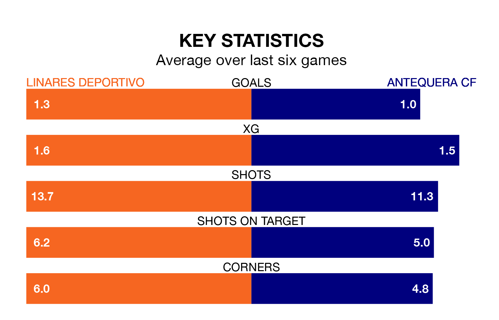

Antequera CF travel to Estadio Municipal de Linarejos looking to secure a first win in six Primera Division RFEF Group 2 games against Linares Deportivo on Sunday.
Antequera have lost two and drawn three matches since they last earned three points – against Granada B on February 25.
They face a Linares Deportivo side who have won one and drawn two over that time.
In Luis Miguel Redondo Fernandez, Antequera have one of the league's most on-form strikers so far this season. He has notched 10 goals in 23 appearances, to sit second in the scoring charts.
His goal rate of one every 197 minutes is quicker than that of Antonio Luis Díaz Sánchez, Linares Deportivo's top scorer with a goal every 245 minutes, and a total of five goals in 22 games.
With 26 goals in 30 games so far this season, the hosts are scoring at below the league average rate with 0.9 goals per game. And they are conceding more than average, letting in 39 goals at a rate of 1.3 per game.
The away side, meanwhile, are above average scorers, with 1.2 goals per game, compared to a league average of 1.1. They have also conceded 1.2 goals per game.
Linares Deportivo are 16th in the table after 30 games, of which they have won eight and drawn eight, earning 32 points.
Antequera are six places ahead of Linares Deportivo in 10th, with 11 wins and eight draws putting them on 41 points.
Linares Deportivo's last match was on Sunday, a 1-1 draw against Málaga CF, with Daniel Perejón Cera getting the goal for Linares Deportivo.
Antequera drew 0-0 with CD Alcoyano last time out, on March 30.
Updated: 16:41 (UTC), 04/04/24